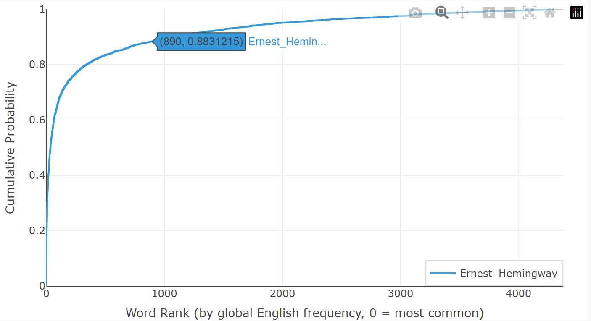

How to Interpret the Two Charts?
After running your text through Writing Style Analyzer, you see two charts. What do they actually tell you? The short answer: they become meaningful through comparison. Here are three comparisons that illustrate how to read them.
Same author, different works

The chart above overlays several short stories by O. Henry. The curves cluster tightly together — both for sentence length and word frequency. This isn't a coincidence. When one person writes multiple works, the underlying statistical patterns tend to converge. It suggests these charts capture something real about an author's ingrained habits — habits the authors themselves have likely never seen visualized so clearly.
Is this proof of authorship? No. But it's a compelling fingerprint.
Different authors

Now compare O. Henry, Stephen King, and Ernest Hemingway. The curves diverge in revealing ways. O. Henry produces the shortest sentences of the three — his sentence-length curve rises earliest. Hemingway, by contrast, is the heaviest user of high-frequency vocabulary. His word-frequency curve climbs the fastest, reflecting his commitment to plain, everyday language — a major reason his prose feels so direct and accessible to a broad readership. What you see in these charts reflects genuine, measurable differences in how writers construct sentences and choose words.
Same author, different decades

Here are two Stephen King novels written 42 years apart: The Mangler (1972) and Revival (2014). The curves no longer overlap neatly. King's style evolved — his sentences grew longer on average, his vocabulary shifted. Writing habits are not frozen; they drift with age, experience, and changing tastes.
Does that mean his craft improved? Declined? Or simply that his style drifted? I don't know. Perhaps you already have your own thoughts.
What to compare
The common thread is comparison. Compare your own writing across time to see growth. Compare yourself to authors you admire. Compare different genres, different moods, different drafts. The charts are neutral — they simply visualize data. The insight comes from the questions you ask.
Try it now: paste in two different pieces of your own writing and see if the curves tell a story.
Oh, one more thing — we've focused entirely on comparison here, without explaining what the charts actually mean in their own right. We'll get into that in the next post. Though I suspect some of you have already figured it out.